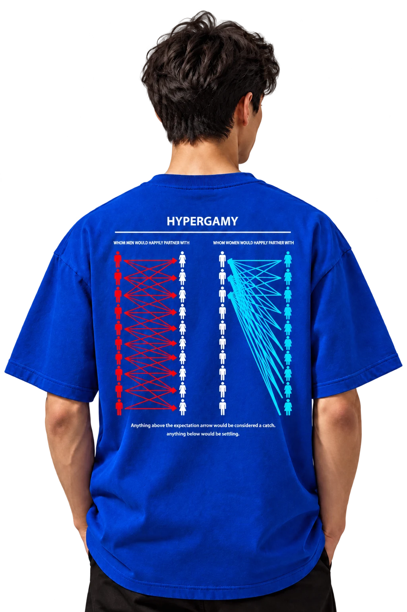
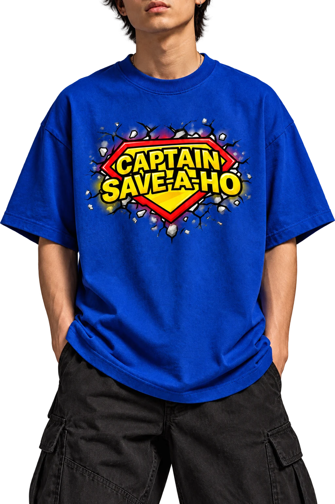
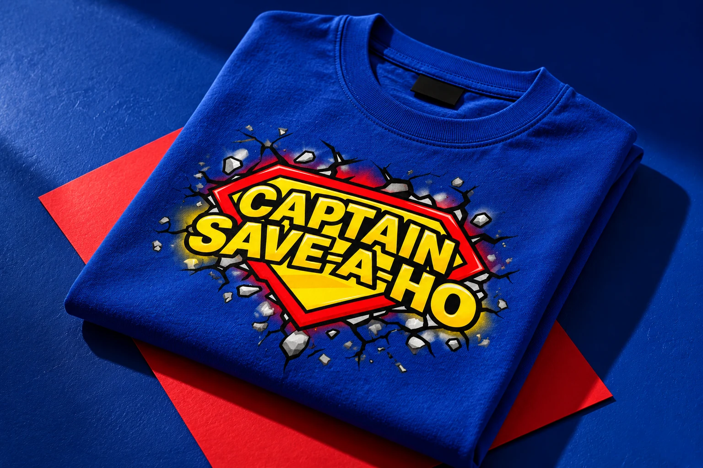
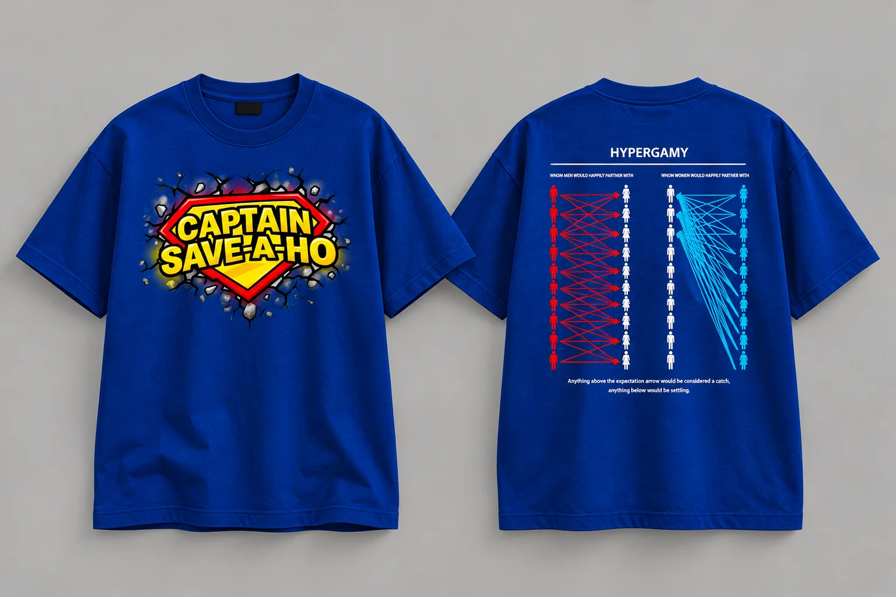
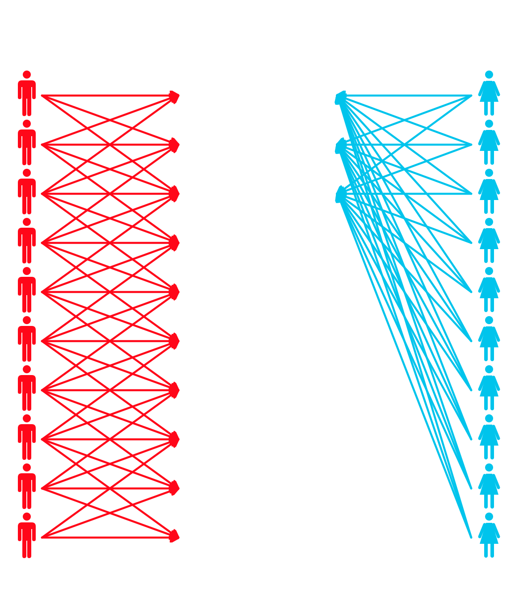

MEME HODESIGN.
Desain kaus dari humor dan budaya internet.
Lihat desain

Captain Save-A-Ho

Lihat karyanyaMeme di layar.
Grafis di kaus.
Humor internet jadi titik awalnya. Emblem komik dan diagram di punggung memberi satu kaus ini dua cara untuk bercerita.

CAPTAIN
SAVE-A-HO
Emblem merah. Tipografi kuning.
Dibuat untuk kaus biru.
Depan yang
lantang.
Huruf besar, emblem merah, dan efek retakan mengambil bahasa visual komik. Sisi depan yang langsung memperkenalkan karakternya.
Lihat grafisnyaDUA SISI.
SATU IDE.
Pilih sisi untuk melihat grafisnya.
Buka ukuran penuh untuk detail.
Captain Save-A-Ho
Grafis depan dengan tipografi kuning, emblem merah, dan retakan bergaya komik.
Hypergamy
Diagram figur dan panah dalam warna merah, putih, dan cyan. Versi vektor tetap tajam saat diperbesar.
